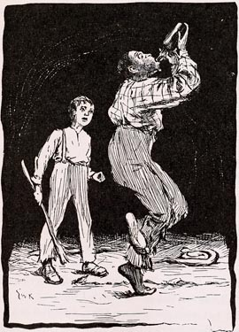

){kind=link}

Blackface MinstrelsyThe very first minstrel show probably occurred in 1843, in New York City. Within a year it became the most popular form of live entertainment in America, and it remained so from the time Tom Sawyer was a child up to the time MT began writing Huck Finn. It's known that MT loved the form -- in an autobiographical reminiscence dictated in 1906 he said, using a word that would have bothered almost no white Americans at the time but which now makes us wince, that "the genuine nigger show, the extravagant nigger show" was "the show which to me had no peer" and "a thoroughly delightful thing." Just as his use of that word in Huck Finn has provoked controversy, so do commentators disagree on how to characterize the minstrel show as a source for the novel. In the minstrel show white entertainers put on blackface and "imitated" or "caricatured" slaves in the South and ex-slaves in the North. The distinction is crucial. During MT's times most white commentary on minstrelsy (including MT's own remarks for his autobiography) assume its accuracy, its essentially faithful imitation of African-American speech, singing and dancing. Since the Civil Rights Movement, on the other hand, nearly every commentator agrees that the minstrel show "coon" is a racist caricature.The group pictured below, Harmoneons Carolina Minstrels, is atypical in its inclusion of a woman, but this picture, from the cover of a piece of sheet music published in 1845, is the earliest illustration of minstrelsy in the Barrett Collection: In Tom Sawyer minstrelsy appears in both the text and the illustrations. After the troupe that visits St. Petersburg finishes its run, Tom and Joe Harper get up their own show and are, as the caption for the following True Williams illustration puts it, "happy for two days": The minstrel show is one kind of entertainment that the King and Duke don't attempt in Huck Finn. The question remains, however, whether in some sense MT is enacting a version of minstrelsy in the novel as a whole, with Jim cast in the role of the "minstrel darky." Would contemporary readers have heard Huck's conversations with Jim as simply a written version of the familiar "Ethopian dialogues" between Mr. Interlocutor and the minstrel show's end men, Bones and Tambo? How familiar MT's contemporary white audience would have been with the stereotypes of minstrelsy is indicated by the many notices and ads for minstrel performances that I found while looking for reviews of MT's early lectures in newspapers from Cleveland or Peoria or Newark. It's also clear to me that Cort, the white New York teenager Edward Kemble used as his model for the figures in his illustrations for Huck Finn, imagined African-Americans after the model of Bones and Tambo. Kemble says Cort most enjoyed posing as Jim: "he would jam his little black wool cap over his head, shoot out his lips and mumble coon talk." And when I look at Kemble's representations of Jim, I don't see a human being, but this same caricature. MT's contemporary white readers would have seen nothing wrong with a "minstrel-show" version of an African-American. But the question of what kind of "source" minstrelsy was for MT's novel remains unanswered by a reference to the racist prejudices of his popular audience. Does MT's representation of Jim reinforce or complicate or subvert such prejudices? One way to answer such questions is to compare the kinds of routines that audiences heard at the minstrel show with the kinds of conversations MT stages between Jim and Huck. Immediately below are two typical "Ethiopian dialogues," both taken from a 19th-century text called Minstrel Gags and End Men's Hand-Book (New York: n.d., Dick & Fitzgerald, Publishers). They are followed by links to two passages in Huck Finn, where it seems to me that in Huck's lines one hears the correct accents of Mr. Interlocutor, and in Jim's replies, the comic inadequacies of Mr. Bones. BY J. HARRY CARLETON. Interlocutor. I say, Bones, were you ever in love? Bones. I wasn't nothin' else, old hoss. Interlocutor. What kind of a girl was she? Bones. She was highly polished; yes, indeed. Her fadder was a varnish-maker, and, what's better still, she was devoted to her own sweet Pomp. Interlocutor. What do you mean by that? She must have been a spicy girl. Bones. Yes, dat's de reason she was so fond of me. She was a poickess, too. Interlocutor. A poetess, you mean. Bones. Yes, she used to write verses for de newspapers Interlocutor. Is that so, Bones? Bones. Yes, saw. De day I went to de house, I -- golly! -- I dressed myself to kill, and my ole trunk was empty. Well, just as de gal seed me, she cove right in -- she was a gone coon. When I left, she edged up to me and whispered, "you're too sweet to live." Next day I got a billy-doo. Interlocutor. How do you know it was a billet-doux? Bones. 'Cause Billy Doo was de name of de boy dat brought it. It smelt all over like a doctor's shop. I opened it, and found dese words: What lub is, if you must be taught, Interlocutor. Well, Bones, you responded? Bones. Yes, sir. Interlocutor. What did you say? Bones. You see, her fadder was a gardener, so I wrote what I call very appropriate lines: O you sweet and lubly Dinah! Interlocutor. That was very nice, Bones. Bones. Yes, I thought so. So delicate was her constitution, dat it nearly killed her. So terrible was de concussion, dat de next time I went to see her she was dissolved in tears. Interlocutor. What! weeping? Bones. Yes, wid tears in her eyes and a big knife in the other. She raised it as I approached. Interlocutor. Rash girl! Bones. Yes. Interlocutor. What was she about to do? Commit suicide? Bones. No; she was peeling onions to stuff a goose wid! Interlocutor. What are you thinking about, Mr. Bones? What is there on your mind this evening? Bones. I was jis' thinking 'bout dat business I was in some time ago. I started in de -- what you call dat business dat da hab free balls hanging out? Interlocutor. Oh, you mean the pawnbroker. Bones. Yes, I was a pawnbroker wen I went in de bis, but I was a dead broaker wen I came out. Interlocutor. Let us hear of your experience as a pawnbroker. Bones. Well, having nofing to do I fout I'd start de broaking business; so I rented a room, got free balls what I found laying around loose in a ten pin alley, and hung 'em out. Interlocutor. And what success did you have? Bones. I'll tell you. De fust man dat cum in had a big paper bundel under his arm; he looked all around, den begin to open de bundel, den he look all around agin. Interlocutor. He was suspicious, I suspect. Bones. Spec he was. At las' he open de bundel and took out a ole hammer, an' wanted two dollars on it. Interlocutor. And what did you do about it then? Bones Hammered him over de head wid a club. De next one dat come in was a Dutchman, wid a big hunk of Limburger cheese in his hand. He wanted to pawn it. Interlocutor. What did you tell him? Bones. Told him to "cheese it" an' go. And de next man had a push cart. Interlocutor. A push cart! What did he want to do with that? Bones. Wanted to pawn it; it was all broke, and he wanted 'nuf on it to get a new one. Interlocutor. What did you do with him? Bones. Took him up on de roof, put him in de cart, an' pushed him off. De nex' man had he leg ob a stove. Interlocutor. A leg of a stove! What did he want to do with that? Bones. Wanted to pawn it. Interlocutor. Wanted to pawn the leg of a stove? What did you do with him? Bones Stove in his plug hat wid it. De nex' man dat come in was a woming. Interlocutor. A lady, sir. And what did she want? Bones She wanted to pawn a chaw of tobacer, and I was goin' to chaw off her ear, but I seen she had a feller outside to back her. Den come a man wid fourteen suits ob old close, and dar wosent haf ob a suit in de hole lot. Interlocutor. And what did he want? Bones. Wanted to pawn dem, an' he wanted nuf on dem fourteen ole suits to buy seven new suits. Interlocutor. What is that? Do I hear right? He wanted enough on the fourteen old suits to buy seven new suits? Bones. Dat's it. Interlocutor. And what conclusion did you come to in regard to the clothes? Bones. I concluded to close up shop, an' I did so, an' never ben in de biz sence. Here are the two conversations between Jim and Huck that seem most clearly to echo these kinds of routines. Of course, these are not the only kinds of conversations the two runaways have, but they are the parts of the novel that MT first performed in front of American audiences when in 1884 he went on tour to promote the book in advance of its publication. These readings probably helped shape the contemporary public's perception of the novel. Apparently when Richard Gilder heard MT perform Jim's account of his speculations and his diatribe against King Solomon, he talked MT into letting him publish additional installments of the novel in his Century Magazine. These colloquys not only made up the entire installment that appeared in the January issue of the Century; the punchline of Jim's account of his "speculatin'" was changed to make it sound even more like a minstrel show routine (see Prepublishing Huck): |
| COMPARE CHAPTER 8: "Jim's Investment" | COMPARE CHAPTER 14: "King Sollermun" |